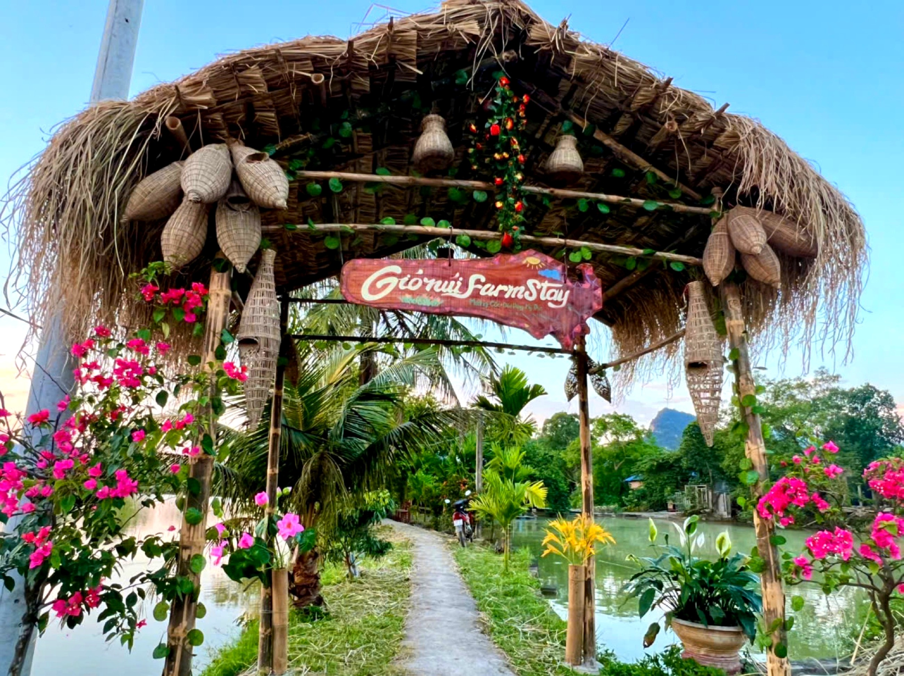

Loại hìnhTypeType
FarmstayFarmstayFarmstay

Farmstay Mật Ong (Nhà ông Toản) là một trong những điểm đến giàu chiều sâu văn hoá và trải nghiệm nhất trong tuyến du lịch cộng đồng Mường Cốc. Trung tâm của không gian này là ngôi nhà cổ truyền thống của người Mường – công trình mang giá trị kiến trúc bản địa đặc trưng, được gia đình gìn giữ qua nhiều thế hệ.
Điểm đến sở hữu bộ sưu tập cối đá cổ phong phú – những hiện vật gắn liền với đời sống xay giã lương thực của người Mường xưa – cùng hệ thống sân và thiết bị sấy thóc truyền thống vẫn còn nguyên vẹn. Đây là không gian "bảo tàng nông nghiệp sống" hiếm có, nơi du khách có thể thực sự chạm tay vào lịch sử lao động của cộng đồng người Mường địa phương.
Mô hình Vườn – Ao – Chuồng tại đây được vận hành theo lối truyền thống: ong lấy mật được nuôi trong vườn, ao cá và chuồng trại tạo thành hệ sinh thái khép kín. Du khách được tham gia trực tiếp vào các hoạt động làm vườn, chăn nuôi và đặc biệt là tìm hiểu quy trình nuôi ong lấy mật – sản phẩm đặc sản của gia đình. Ngoài ra, điểm đến còn cung cấp dịch vụ cho thuê xe đạp và xích lô – phương tiện khám phá đặc trưng của tuyến Mường Cốc.
Mat Ong Farmstay (Mr. Toan's House) is one of the most culturally rich and experiential destinations on the Muong Coc community tourism route. At the heart of this space is a traditional ancient Muong house – a structure of distinctive indigenous architectural value, preserved by the family for generations.
This destination boasts a rich collection of ancient stone mortars – artifacts intrinsically linked to the traditional food grinding life of the ancient Muong people – along with an intact system of courtyards and traditional rice drying equipment. It's a rare "living agricultural museum" where visitors can truly touch the labor history of the local Muong community.
The traditional "Garden – Pond – Livestock" model here operates as a closed ecosystem: bees are kept in the garden for honey, while fish ponds and livestock pens complete the cycle. Guests can directly participate in gardening and farming activities, and especially learn about the honey bee-keeping process – a family specialty. Additionally, the destination offers bicycle and cyclo rentals – characteristic ways to explore the Muong Coc route.
Le Farmstay Mật Ong (Maison de M. Toản) est l'une des destinations les plus riches en culture et en expériences de l'itinéraire de tourisme communautaire de Mường Cốc. Au centre de cet espace se trouve l'ancienne maison traditionnelle Mường – une construction d'une valeur architecturale indigène distinctive, préservée par la famille à travers de nombreuses générations.
Cette destination possède une riche collection de mortiers en pierre anciens – des artefacts intrinsèquement liés à la vie traditionnelle de mouture des aliments de l'ancien peuple Muong – ainsi qu'un système intact de cours et d'équipements traditionnels de séchage du riz. C'est un rare "musée agricole vivant" où les visiteurs peuvent véritablement toucher l'histoire du travail de la communauté Muong locale.
Le modèle traditionnel « Jardin – Étang – Élevage » fonctionne ici comme un écosystème fermé : les abeilles sont élevées dans le jardin pour le miel, tandis que les étangs à poissons et les enclos d'élevage complètent le cycle. Les visiteurs peuvent participer directement aux activités de jardinage et d'élevage, et surtout découvrir le processus d'apiculture – une spécialité familiale. De plus, la destination propose la location de vélos et de pousse-pousse – des moyens de transport caractéristiques pour explorer l'itinéraire de Mường Cốc.
| Tham quan nhà cổ người MườngExplore the traditional Muong houseExplorez la maison traditionnelle Muong | Giới thiệu kiến trúc và lịch sử ngôi nhà cổLearn about the fascinating architecture and rich history of the ancient house.Découvrez l'architecture fascinante et la riche histoire de la maison ancienne. |
| Tham quan bộ sưu tập cối đá cổExplore the Ancient Stone Mortar CollectionExplorez la collection de mortiers en pierre anciens | Giới thiệu công dụng và ý nghĩa văn hoá các loại cối đáDiscover the uses and cultural significance of traditional stone mortars.Découvrez les usages et la signification culturelle des mortiers en pierre traditionnels. |
| Trải nghiệm sân sấy thóc truyền thốngDiscover the traditional rice drying yard.Découvrez le séchoir à riz traditionnel. | Tìm hiểu quy trình sấy và chế biến lúa gạo truyền thốngDiscover the traditional art of rice drying and processing.Découvrez l'art traditionnel du séchage et de la transformation du riz. |
| Nuôi ong – thu hoạch mậtBeekeeping – harvest your own honeyApiculture – récoltez votre propre miel | Tìm hiểu và tham gia quy trình nuôi ong lấy mật theo mùaLearn about and participate in seasonal beekeeping for honey.Découvrez et participez au processus saisonnier d'apiculture pour le miel. |
| Làm vườn, chăn nuôiFarm Life: Gardening & Raising AnimalsVie à la ferme : jardinage et élevage | Tham gia hoạt động vườn tược và Vườn – Ao – ChuồngEngage in gardening activities and the traditional VAC (Garden – Pond – Livestock) model.Participez aux activités de jardinage et au modèle traditionnel VAC (Jardin – Étang – Élevage). |
| Cho thuê xe đạpBicycle rentalLocation de vélos | Khám phá tuyến Mường Cốc bằng xe đạpExplore the Mường Cốc trail by bicycle.Explorez le sentier de Mường Cốc à vélo. |
| Cho thuê xích lôCyclo RentalLocation de Cyclo | Trải nghiệm di chuyển xích lô trong làngEnjoy a cyclo ride through the village.Profitez d'une balade en cyclo à travers le village. |
| Ẩm thực địa phươngAuthentic Local FlavorsSaveurs locales authentiques | Bữa ăn gia đình theo đặt trướcFamily meals by reservation.Repas familiaux sur réservation. |
| Lưu trú farmstayFarmstay accommodationHébergement en ferme-séjour | Phòng nghỉ theo đặt trướcPre-booked accommodationHébergement sur réservation |
Farmstay Mật Ong (Nhà ông Toản) hướng tới phát triển thành điểm trải nghiệm nông nghiệp và di sản kiến trúc tiêu biểu của tuyến du lịch cộng đồng Mường Cốc. Sự kết hợp độc đáo giữa nhà cổ – bộ sưu tập cối đá – hệ thống sấy thóc truyền thống và mô hình nuôi ong Vườn – Ao – Chuồng tạo ra sản phẩm trải nghiệm đa tầng, phù hợp cho nhiều nhóm đối tượng khách. Gia đình định hướng phát triển thêm sản phẩm mật ong thương hiệu Mường Cốc và mở rộng dịch vụ cho thuê xe đạp thành tuyến khám phá có hướng dẫn, góp phần tạo sinh kế đa dạng và bền vững từ di sản nông nghiệp bản địa. Điểm đến Du lịch cộng đồng Mường Cốc, Xã Mỹ Đức – Thành phố Hà NộiFarmstay Mật Ong (Mr. Toản's House) aims to become a quintessential agricultural and architectural heritage experience within the Mường Cốc community tourism route. The unique blend of an ancient house, a collection of stone mortars, a traditional rice drying system, and a "Garden – Pond – Cage" beekeeping model creates a multi-layered experience suitable for diverse visitor groups. The family plans to develop Mường Cốc branded honey products and expand bicycle rental services into guided discovery tours, contributing to diverse and sustainable livelihoods from indigenous agricultural heritage. A Mường Cốc Community Tourism Destination, My Duc Commune – Hanoi City.Le Farmstay Mật Ong (Maison de M. Toản) vise à devenir un point d'expérience agricole et de patrimoine architectural emblématique de l'itinéraire de tourisme communautaire de Mường Cốc. La combinaison unique d'une maison ancienne, d'une collection de mortiers en pierre, d'un système traditionnel de séchage du riz et d'un modèle d'apiculture "Jardin – Étang – Enclos" crée une expérience à plusieurs niveaux, adaptée à divers groupes de visiteurs. La famille prévoit de développer des produits de miel de marque Mường Cốc et d'étendre les services de location de vélos à des circuits de découverte guidés, contribuant ainsi à des moyens de subsistance diversifiés et durables issus du patrimoine agricole local. Une destination de tourisme communautaire de Mường Cốc, commune de My Duc – ville de Hanoi.